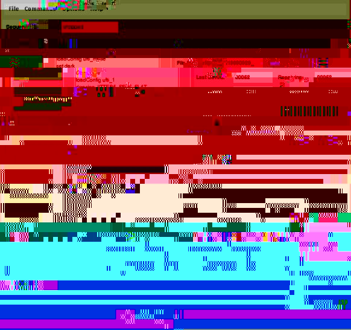

If this is your first Observation of the night, the ORAC Observation Sequencer and its console will start when you select the Observation using the ORAC-OM. The sequencer drives all the actions needed to take data and the console allows you to interact with it, for example to start and stop the sequence execution, as well as providing feedback describing the status of your observation.
It is helpful to organise the main Observing Manager window and the Observation Sequencer Console on the screen so that you can see both at the same time. (When you are ready to use a new Observation you will do so from the Observing Manager).
When you choose your observation in the ORAC-OM it is translated into a sequence of commands which can be executed and any assosiated configuration information for the instrument. The sequence is loaded into the console which appears as shown below:

The sequence is run in order to take data. If you are used to using "Execs" to take data at UKIRT, this is a very similar concept, with some added functionality. The buttons on the left control the sequence execution, and their names are intended to explain their functions - if you have only a simple short observation to carry out, then simply press
runand the observation will be executed. A description of what each button does can be found in the buttons section below.
The status of the sequence is shown at the top left and will be one of stopped , running , or paused .
As well as the words changing the status display is colour coded.
When a new Observation is selected from the OM, the sequencer
will always be in a stopped state.
The instrument with which the sequencer console will take data is shown at the top right, after the state indication. Unlike the current system, ORAC supports the simultaneous operation of more than one instrument, so that calibration observations, or instrument run-up, can be done while science data is being taken with another instrument. If you select an observation with another instrument from the orac-om then a second sequencer console, for that instrument will appear.
The sequence itself is shown in the white area next to the control buttons. The scroll bar moves to show where in the sequence you are, and very long sequences will scroll up the window. For a more detailed explanation of the sequence display, see the sequencer section below.
The status and progress of the data taking and writing of files to disk is shown in the delineated area to the right of the sequence display. Note that for UFTI the writing of files to disk is now buffered (i.e. observation n+1 starts before observation n is finished being written to disk) and this area shows you the progress of the data through the buffer and onto disk. A description of each field in this display can be found in the data handling section.
The status of the instrument you are observing with is shown in the delineated area to the right of the sequence display. Currently only UFTI is integrated into the ORAC system, and a description of the fields in the UFTI status display can be found at the UFTI status section. In the near future Michelle will also be a fully ORAC controlled instrument and the Michelle status display will be found here.
Finally, but by no means least, at the bottom of the console there is a space for you to enter comments as the observing progresses. These are written to a comments log file, which is saved with your data.
Run will always start the sequence execution from the begining . When you have chosen an Observation using the ORAC-OM and sent it to the sequencer for execution then you would normally start the data taking simply by pressing the run button.
Run From Highlight will start the sequence running from the position of the turquiose highlight on the sequence display panel. If you stop the sequence running at any stage, you can use this button to restart it from the point you left off by moving the highlight to the right place. You can also use it to add observations to a sequence that has finished, by moving the highlight back up the required number from the end.
Stop At Break will stop the sequence at the next natural break point for the sequence. Natural break (stopping) points for a sequence exist when you are doing a repeated pattern of telescope moves. If you stop at a natural break point you will have "whole numbers of pairs", or completed sets of 5-point jitter positions. These stopping points are marked on the sequencer display by dotted green lines, so that you can see how far ahead the next one is. The button is only active when there is a sequence running.
Stop ASAP will stop the sequence running at the earliest available opportunity. Usually this means when the current item has completed - e.g. if you are in the middle of an observation when the button is pushed the sequence will stop at the end of the observation, and the data will be written to disk as normal. The button is only active when there is a sequence running.
Pause will pause the sequence at the earliest available opportunity. Often this means when the current item has completed, but some instruments which take a series of exposures to make up an observation (e.g. for sampling, or chopping) will allow the observation to pause part way through. UFTI does not support this and the pause will activate when the current observation is finished. The button is only active when there is a sequence running. After the pause has been executed the button label changes to Continue and it is coloured yellow. You must Continue before any other buttons become active.
Abort will abort the current action at the earliest available opportunity. If the instrument is capable of aborting an exposure before it is completed then it will do so. The exposure will not be written to disk. The button is only active when there is a sequence running.
Movie will allow you to take "movies" i.e. read the array out and display on the UKIRT quick-look without the data being saved to disk. Movie can only be used and the button is only active when the sequence is in a stopped state. . Since a new Observation always loads with the sequence in a stopped state, the Movie button is active before you start to take data for each new Observation that you select with the ORAC-OM. If you push the movie button you are given the option of changing the on-chip exposure time for the movies before they start.
 Much of the information in the display of the current
sequence, and the sequencer control is provided by the
highlight on the sequence display. This is used to
keep
track of "where you are" in the sequence - both in terms of providing you with
a visual aid, and for the internals of the software.
Much of the information in the display of the current
sequence, and the sequencer control is provided by the
highlight on the sequence display. This is used to
keep
track of "where you are" in the sequence - both in terms of providing you with
a visual aid, and for the internals of the software.
When the sequence is running the highlight moves down the list of commands as each one is executed, so that it is always over the item that is currently being done. Some actions go by very quickly - this is either because they are just quick to do with the new system, or because they are allowed to happen at the same time as the next command. The highlight stays on the currently executing item until its is finished and then moves to the next one. If your sequence is longer than the size of the box, the highlight will initially move down, then when it reaches the middle the sequence will scroll up a few lines - this ensures that for long sequences the highlight is always visible and that you can always see several previously executed commands as well as the forthcoming ones.
When the sequence is stopped the highlight reflects the fact that the current item is finshed before sequence execution stops by moving onto the next item. This means that if you then use the Run From Highlight button to start it going again the highlight is already in the correct place.
When the sequence is stopped, you can control the position of the highlight to determine where in the sequence the Run From Highlight button will cause it to start from. (Note that it can be placed on any command in the sequence, not just Observe) You can either click on the highlight with the left mouse button and "drag" it to the place you want to start from, OR , just click the left mouse button on the command you want the highlight to move to. You could use this facility to repeat a single position in a map, where something went worng, without having to repeat the whole sequence or do a separate single observation. Similarly if you initially thought that you needed say 20 repeats of 9-point jitter patttern to detect a faint source, and then when data taking is in progress you find that really you should do 25 to get the required S/N, you can move the highlight back up the sequence after it has finished and use Run From Highlight to take the extra data.
Unlike in the current
system, once loaded from the ORAC-OM a sequence remains available to use for
data taken until another one is selected. If after it has finished you want to
repeat it all, just use the Run button again.
The -------break point item on the sequence display marks the natural stopping points for the sequence. For example if you are taking data by repeating a 5-point jitter pattern of telescope moves, then you have "complete" sets of data for ORAC-DR every five observations. The " -------break point " is drawn on the sequencer display after the commands for each set of 5 telescope movements and observe commands. A "break point" is automatically inserted into the sequence, whenever your Observation defined in the OT has a repeat in it i.e. when it has " repeat n x" followed by any iteration. It does not "do" anything unless it has been activated by you, but its display on the screen should help you to be sure that you are stopping the data taking at a sensible place. There are two ways in which you can use the " -------break point " item to help you stop in the right place :
1) When you have started the last "set" of the pattern, at any stage during it click on the Stop at Break button. This will activate the NEXT -------break point " in the sequence. The colour will change to red, i.e. an activated "break point" appears as " -------break point " on the display so that you can see exactly where the sequence will stop. The sequence execution will stop when the highlight reaches the activated break point. After you have actived a "break point" the Stop at Break button becomes a Delete Break button. This means that if you change your mind about using the "break point" you can de-activate it. Of course you can also just let the sequence stop when it gets to the activated " -------break point ", and then use Run From Highlight to start it going again.
2) Alternatively you can just use the " -------break point " item as a visual guide to where to stop, and use the Stop asap button when you are in the process of the last observation before the break point indicator.
The commands shown on the example in the image are :
targetblahs This is how your co-ordinates, coord system, proper motions and eventually non-siderial tracking details are sent to the telescope. It is also used to send your guide star co-ordinates if you have specified one. The coordinates are in decimal hours and degrees.
Slew_all, Slew_guide This is how the telescope is instructed to move to the co-ordinates of your target, and the guider to your guide star. You do not have to worry about the telescope "taking off" - the final control still lies with the TSS. Initially the sequence will go into a paused state when these commands are executed, and you should use the continue button when the TSS advises you to do so.
loadConfig this instructs the instrument to read the information about the configuration of filters, exposures times, etc. you set up for your Observation using the OT. It does not actually change the instrument configuration, it's only a "get ready"
drrecipe is the command to the data handling system to tell it which ORAC-DR data reduction recipe name to put into the data headers for ORAC-DR to use.
set instaper, define inst UFTI these commands are how the telescope is provided with the instrument aperture information that it needs to work out how to point at your target such that it falls properly on the array and the WCS information in your data file will be correct.
set object (set dark, set arc, set flat). This is the command to the instrument to change its configuration. The UFTI Status display will show the UFTI state as "busy" while the change occurs. For some instruments when the instrument configuration has changed the sequence will automatically go into a paused state, and you should not use the continue button until the TSS advises you to do so. Unlike in the current system, all changes of the instrument configuration occur in response to this command.
Observe This is the command to the instrument to take data, of the type it was previously instructed to set to. i.e. If "set dark" is followed by "observe" then the "observe" instructs the instrument to take an observation in the dark configuration and to label it as a dark in the data header file so that ORAC-DR can recognise it as such. Similarly "observe" after a "set object" command instructs the instrument to take data in the configuration of filters and exposures which the "set" has already instructed it to change to and to label the data as being of type "object"
offset n m is the instruction to the telescope to offset the pointing by the specified amounts in the directions that are parallel and perpendicular to the instrument axis as defined in its instrument aperture. The new telescope software takes care of issues such as whether the offset is too large to execute with guiding.
The description of the commands above is provided to help you follow the progress of your observing - astronomers do not have to learn the details of the command syntaxes, because the sequence is automatically created by the ORAC-OM from the Observation you have defined in the ORAC-OT. This also ensures that the passing of information that has to be shared between the instrument and the telescope happens in the right order.

UKIRT data is saved to an HDS container file with the name fileprefix_obsno, where fileprefix consists of a letter indicating which instrument is in use (f for UFTI, m for Michelle ....) followed by the UT-date, and obsno starts at 00001 at the begining of the night.
The current group number is indicated just above the current observation number. Group numbers are used by ORAC-DR to keep track of which data files "belong together" for the purposes of data reduction.
The items Last Saved, Saving, Last Taken, Receiving, and Received refer to
the passage of data from the instrument to the DHS software to disk. The
sketch summarises the stages of this process that are being refered to :
The Data Handling System controls the allocation of observation numbers to
the data - i.e. it gives the UFTI crate the number to use as the observation
number when it has finished taking data and is transferring it out. The
numbers on this display will therefore always represent what is really
happening. The
data handling system is also responsible for keeping a simple log of when
observations started and ended, and the comments log as described below.
The area at the bottom of the screen allows you to enter one line comments
(80 characters) at any time. You can enter as many as you wish, one line
at a time.
Since the writing of data to disk is asynchronous with the
taking of data the software cannot know for sure which Observation number your
comment might refer to. Once an observation has been completely written to
disk it cannot be reopened by acquisition software.
Instead of trying to write the comment to a current data
file header, which might be the wrong one for a variety of reasons, the
comments are saved instead to
a time stamped ascii file by the DHS. Any "start of night" comments you
entered
at runup time are also written in this file.
The time at which your observations
started, and the time they were written to disk are also logged in this file.
This means that if you enter a comment such as "just noticed the cirrus is
moving in" it can be accurately placed in the data taking order.
If you want to enter a comment concerning a specific observation number then
giving the number in the comment is a good idea e.g. "obs55 - it
looked as if the autoguider lost it"
The comments are not actually sent to the DHS for writing to disk until you
click on the submit button at bottom left.
The clear button removes all characters from the comment box.
The instrument status display is located underneath the data-taking and
filing status area. This area looks different for each instrument, to
reflect the fact that for different instruments you will require different
information to check that the configuration of the instrument is correct.
For UFTI the instrument status display looks like:
If you are running a sequence which changes the UFTI configuration,
e.g. from the J98 to K98 filter,
the Status Display screen will update when the "set" command is
sent from the sequencer to the instrument. The UFTI State item at
bottom left
of the status screen will change from idle to Busy, while the
UFTI instrument is carrying out the changes. When the configuration change has
completed then the screen will update showing the new filter, exposure
time, etc.
When UFTI is taking data the UFTI state will also show as "Busy". In addtion
the count-down timer at the Remaining item, will count down the
seconds in the exposure. This timer makes an allowance for the array readout
overheads, and so if you have selected a 10sec expsure, it will actually
start counting down from about 14 sec. This means that if the count-down
timer goes
significantly negative (-10 say) there has definately been a problem with
the data acquisition, and you should seek help with troubleshooting from
the TSS or your support scientist.
The message area provides some additional information about the UFTI state
e.g. when it is "Busy" the message area will tell you whether this is because
it is "Exposing" or "Configuring", when an action is finished the message
reports "Completed".
The instrument status display is located underneath the data-taking and
filing status area. This area looks different for each instrument, to
reflect the fact that for different instruments you will require different
information to check that the configuration of the instrument is correct.
The Michelle instrument status display is not yet designed. When it is
then it will be described here. Other instruments may be integrated with
ORAC and might also have a status display on their sequencer console - this
is tbd.
The next section describes how to start the
next Observation after you have completed one.

Last Saved is the number of the most recent observation that has
been fully written to disk (and hence is available to ORAC-DR).
Saving is the number of the observation that is currently in the
process of being written to disk.
Last Taken is the number of the last observation which has been
fully transferred from the UFTI electronics to the DHS.
Receiving is the number of the observation which is currently in the
process of being
transferred into the DHS
Received shows the sub-frames of the data which the DHS is
Receiving for which the transfer has been completed.(Since UFTI neither
chops nor sub-samples, this will always be either 0 or 1 for UFTI)
Comments Log
UFTI Status Display

The information about the UFTI configuration is monitored directly from the
UFTI control crate - it therefore shows the real configuration of UFTI (not
what you think you sent it).
Michelle Status Display